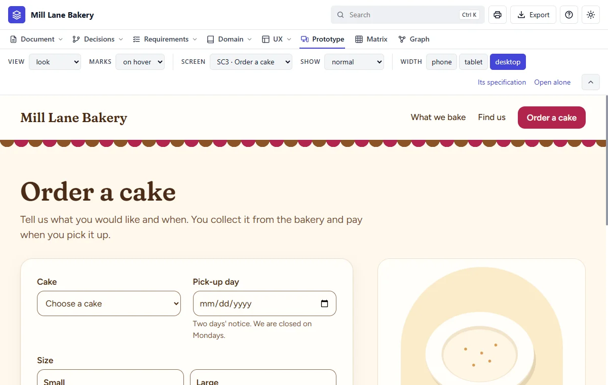
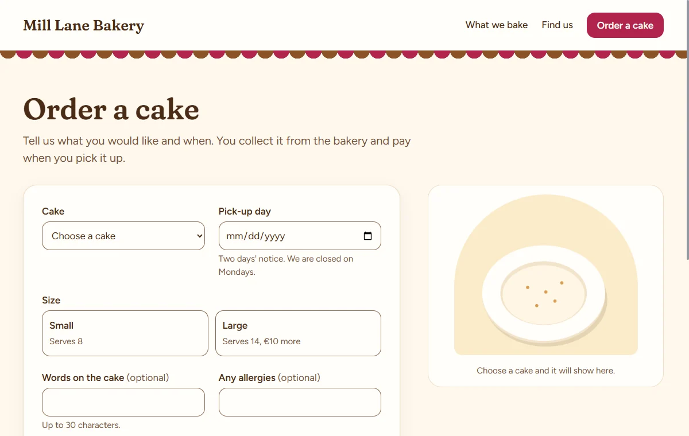
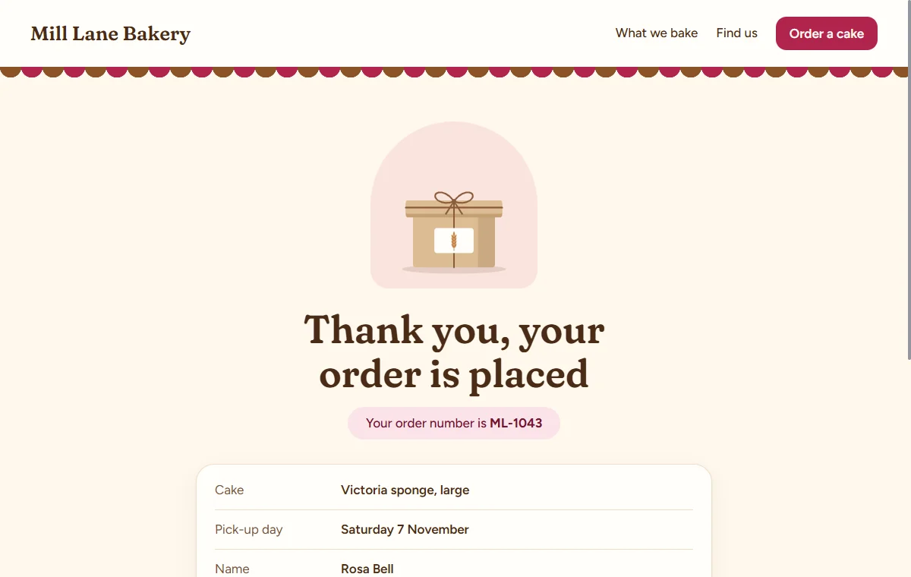
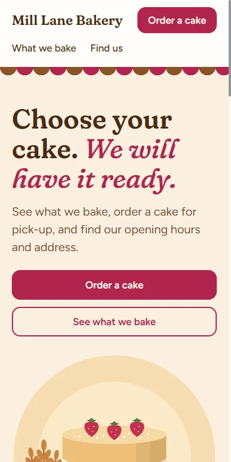
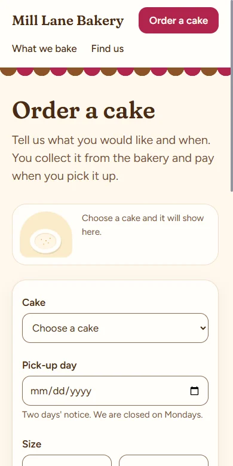

Step 14 of 20 · See what you got
Your prototype
Do this
Click Prototype in the bar. A prototype looks and clicks like the real site, with nothing behind it: no order is really placed.

- 1View: the look, or the plain wireframe.
- 2Screen: pick any of the five.
- 3Show: a state, such as an error.
- 4Width: phone, tablet or desktop.
Try ordering a cake
- Choose What we bake as the screen, and click Order this cake.
- Fill in the form. Try a Monday: it's refused, because the bakery is closed.
- Press the order button and read the screen that follows.
- Choose phone under Width, and do it again.




Look closer
Rest your pointer on anything on the screen. A small mark appears at its corner: click that, and the side panel shows which fact it is, what it stands on, and its size and colours.